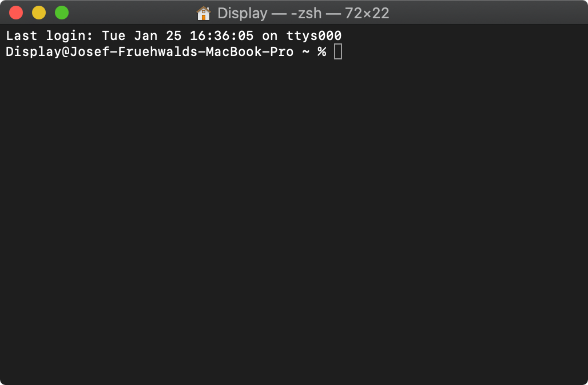
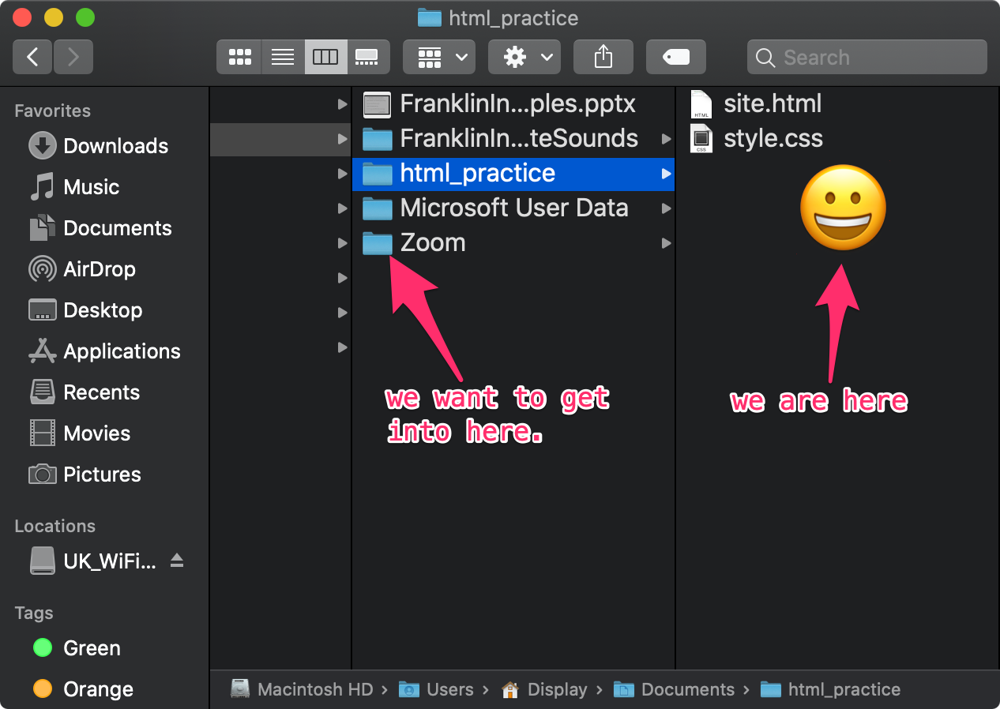

Navigating Directories
Command Line Interface
Some of what we’ll be doing in class will involve interacting with your computer through a “Command Line Interface.” Command line interacts are purely text based way to interact with your computer. It’s your same exact computer, just a different way of using it without using icons, or clicking.
macOS
In macOS, we can access a command line interface using the program Terminal. You can find Terminal in your Applications inside the folder called Utilities, or just by typing in “Terminal” into Spotlight search.
Windows
For now, on Windows, I’d recommend using PowerShell. You can launch PowerShell by searching for it in the Start menu.
Getting your Bearings
When you first launch your command line interface, it will look something like this:

This is obviously scary looking, and it doesn’t give you much hint as to what to do next. The important to thing to keep in mind is that while you are using the command line interface you are inside of a folder. There are two commands I recommend using over and over again to figure out where you are, and where you can go.
“The Prompt”
We call the the space waiting for us to type in something the “prompt”. It usually has a symbol before it. Depending on your system, it might be any of the following: $, %, or >. If you type something in here, your computer will interpret it as a command, and try to run it.
pwd
If you type in pwd into the terminal and hit enter, it will print out the absolute path to where you currently are. When you first launch a terminal, it usually starts you off in your home directory, which is usually going to be named after your username.
bash
pwd/Users/DisplayUse pwd early, and use it often. It stands for present working directory.
ls
If you type in ls into the terminal and hit enter, it will print out a list of all of the directories and files inside the folder you are currently in. Here’s how it prints out on my own computer when I first launch Terminal:
bash
lsDesktop Library Pictures
Documents Movies Public
Downloads Music Sites Each of the items listed here is another directory inside of my current directory. I can look inside and get a list of all the files inside of these directories by typing in ls and the name of the directory I want to see inside of. For example, if I wanted to get a list of all of the files on my desktop, this is what I would type:
bash
ls DesktopSampletext.txtI only have one file on my desktop right now, and it’s a document called Sampletext.txt.
Know your surroundings
Really skilled and accomplished programmers use the commands pwd and ls constantly, and so should you! It’s the only way to keep track of your surroundings on the command line.
If you ever are looking at a terminal, and don’t know what to do next, just type in pwd and ls.
Every time you do a new thing in the terminal, type in type in pwd and ls afterwards.
Just type in pwd and ls all the time. :::
Getting around
You’re not always going to want to hang around in your home directory the whole time. You may want to get to a specific directory where some code or a script is to run it. To do this, we use the cd command, which stands for change directory.
cd : Moving down 1 level
To change the folder you’re in, you just need to type in cd and then the name of the folder. For example to move from my home directory into my Documents folder, it would look like this:
bash
lsDesktop Library Pictures
Documents Movies Public
Downloads Music Sitesbash
cd Documents
lsFranklinInstituteSamples.pptx Zoom
FranklinInstituteSounds html_practicebash
pwd/Users/Display/Documents- First, I double checked which directories were in the folder I was currently in with
ls. - Second, I moved into the Documents directory with
cd Documents. - Third, I checked what files and directories were in my new location with
ls. - Fourth, I double checked my current location with
pwd, which gave my the absolute path to where I was.
cd : Moving up 1 level
If after moving into my documents folder, I wanted to move back to my home directory, that would involve moving up one level, because my Documents folder is inside of my home directory. We can do this using cd again, but instead of the name of a directory, we follow it with ... The two dots, .., is a short hand for “one level up from where I am.” Here’s how that works out on my system.
bash
pwd/Users/Display/Documentsbash
cd ..
pwd/Users/Display- First, I double checked where I was with
pwd. - Second, I moved up one level with
cd .. - Third, I double checked where I would up with
pwdagain, confirming that I was now in my home directory again.
cd : Moving down multiple levels
You don’t have to move down just one level at a time. For example, right now we’re in my home directory, but inside of my documents there’s a directory called html_practice. That’s two levels down. To get into html_practice, I just need to enter cd followed by the relative path to it. Remember, the relative path is the sequence of directory names that lie between where we are and where we want to go. Here’s how that looks on my system.
bash
pwd/Users/Displaybash
cd Documents/html_practice
pwd/Users/Display/Documents/html_practicebash
lssite.html style.css- First, I double checked my location with
pwd - Second, I moved down two levels through
Documentsintohtml_practicewithcd. - Third, I double checked where I had moved to with
pwd. - Lastly, I checked what files were in my new directory with
ls.
Moving up and over
Now, we’re inside html_practice which is inside Documents. But what if we wanted to move into another directory that is also inside of Documents. For example, the directory Zoom is also inside of Documents, which is where Zoom saves all of the chat logs from our class meetings.

We could do this in a two step process, using cd .. to move up one level, then cd Zoom to move into the zoom directory. But we can also combine the two into one step.
bash
pwd/Users/Display/Documents/html_practicebash
cd ../Zoom
pwd/Users/Display/Documents/Zoom- First, I double checked where I was with
pwd. - Then, I moved up into
Documentsand down intoZoomin one go withcd ../Zoom - Finally, I double checked where I wound up with
pwd.
Very useful tips!
There are a few tips, tricks, and shortcuts that can make using the command line a little bit easier.
Tab autocomplete
When using a command line interface, “tab autocomplete” is a crucial tool to help you get around. For example, if you are in your home directory and you want to move into your documents directory, all you really need to type is cd Doc and the terminal should autocomplete the rest of the file name!
If you have multiple directories that start with Doc, it will list all of them, and then you’ll only need to type in a few more characters before it will be able to autocomplete.
Tab autocomplete works for ls as well, which can let you explore through directories without needing to move around.
Get back home!
Technically, your home directory is a directory with a long absolute path. But because it’s a directory you’ll probably want to keep getting back to often, there’s a shortcut built in. If you run cd ~, it will zip you back to your home directory from wherever you are.
Absolute paths
If, for some reason, you don’t know what the relative path is to a directory you want to get to from where you are (or maybe it’s very complicated), you can always run cd followed by the absolute path to where you want to go.
This is all going to matter a lot
Using the command line and navigating your computer is going to come up a lot more in this course. You should try as much as you can to get a handle on how this all works now.
Reuse
Citation
@online{fruehwald,
author = {Fruehwald, Josef},
title = {Navigating {Directories}},
url = {https://lin511-2024.github.io/notes/concepts/03_navigating-directories.html},
langid = {en}
}